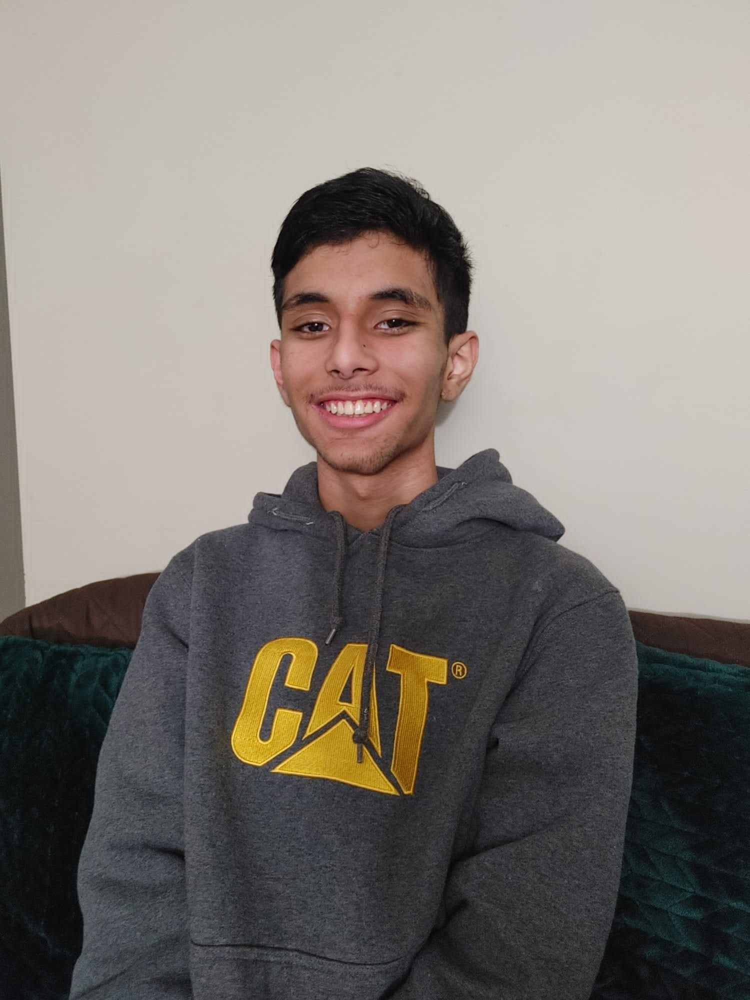

About me:
My name is Faariz Haider Sheikh, and I was born on November 23, 2005, in Lahore, Pakistan, where I went to nursery and kindergarten.
I came to Canada around the age of six with my family and continued from first grade. I am eighteen, turning nineteen this year (2024),
and live in Windsor, Ontario, Canada, where I study at St. Clair College for the program Computer Programming.
Siblings:
I have two older brothers and one little sister. My oldest brother, Raamiz, is turning twenty-six this year
and is studying to become a doctor. He is the mature one, and yet the serious — but sometimes funny.
My other brother, Shameer, is turning twenty-two this year and is studying computer science — like me!
Shameer is stubborn but often humourous. They both study at the University of Windsor, where I will study after college for Computer Programming.
My little sister's name is Shermeen, and she's turning twelve this year and is studying at A.V. Graham Elementary School in Grade 6.
She is annoying, often funny — but hey, most playful.
Studies:
I studied in high school in Saskatoon, Saskatchewan, Canada, at Aden Bowman Collegiate from grades nine to eleven
and then at Tecumseh Vista Academy for twelfth grade.
I lived in Saskatoon with my family from 2011 to 2021,
and then we moved to Windsor in June of 2021.
Work:
Currently, I am looking for a job. It's difficult to get a job here in Windsor. I want to look for a job within Windsor,
or in Tecumseh.

Other:
- I chose Computer Programming to pursue a career in it. HTML/CSS seemed to be one of the good options, since I don't
know what exact career.
- If I want to meet one person in my life, it would be Elon Musk, a famous Entrepreneur.